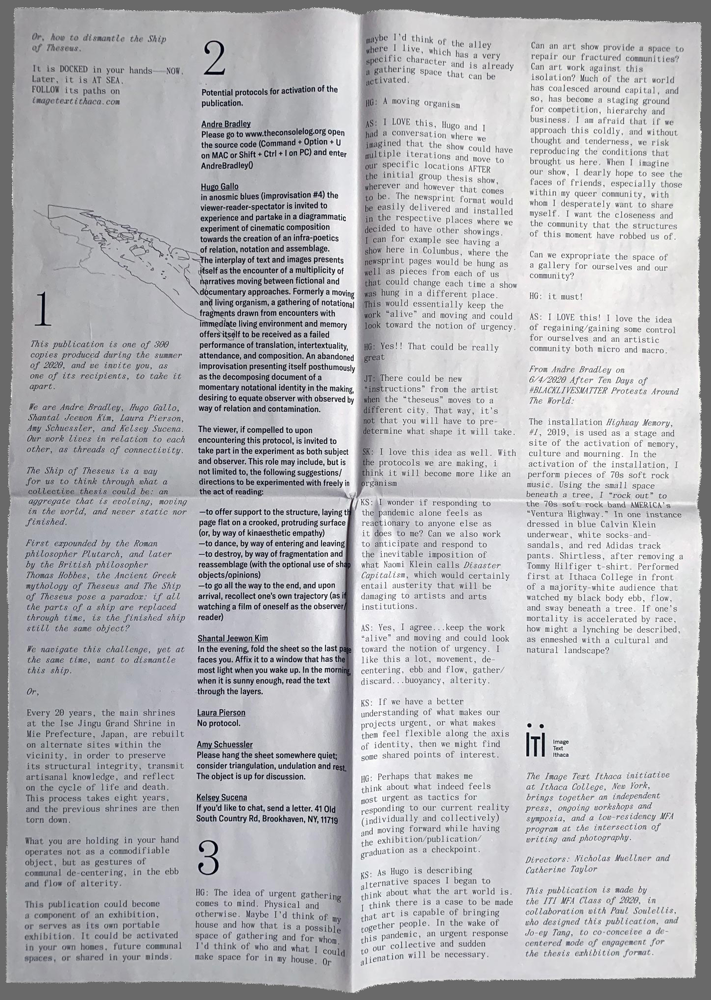
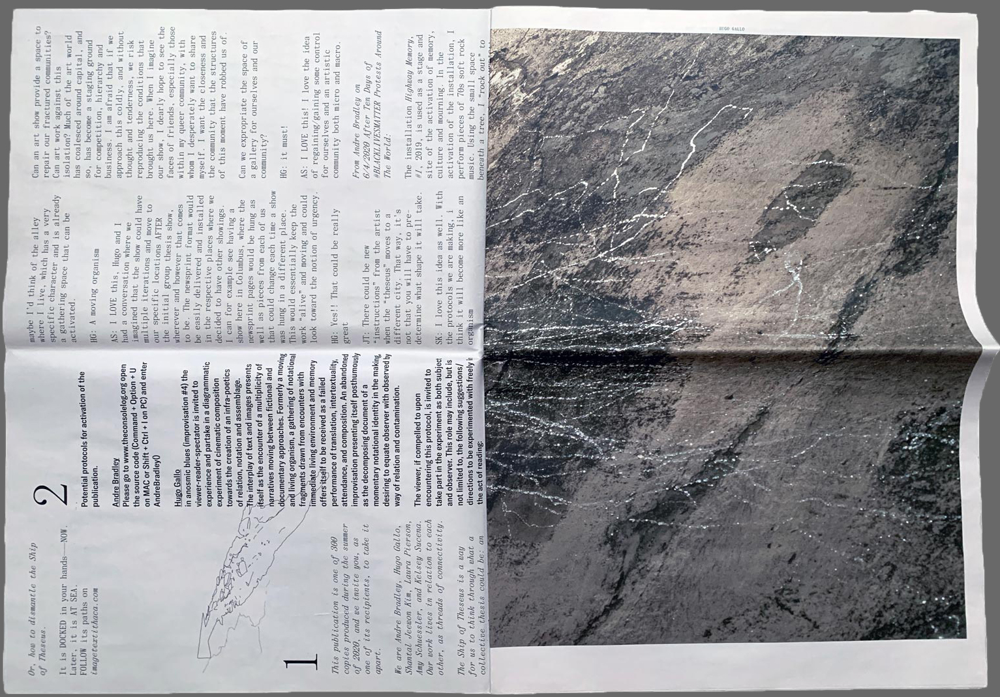
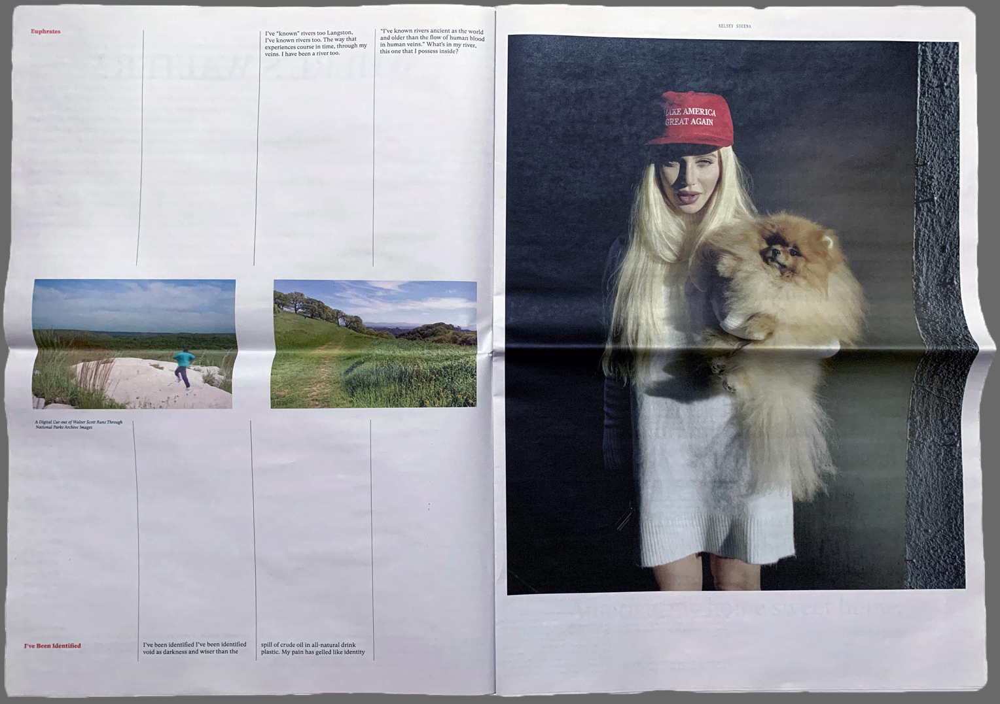
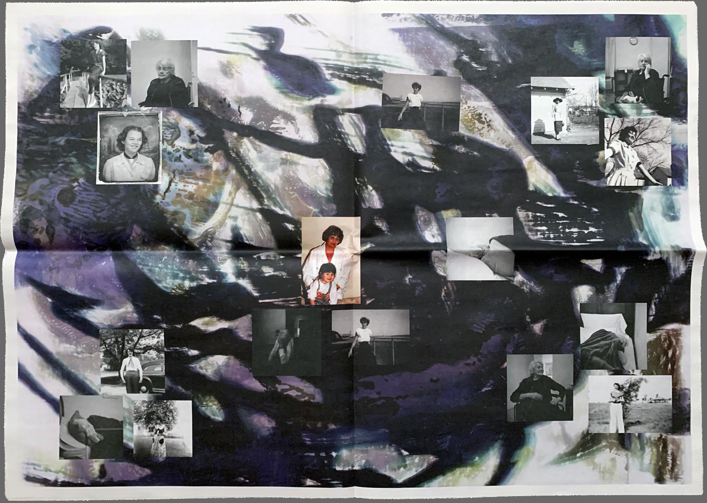
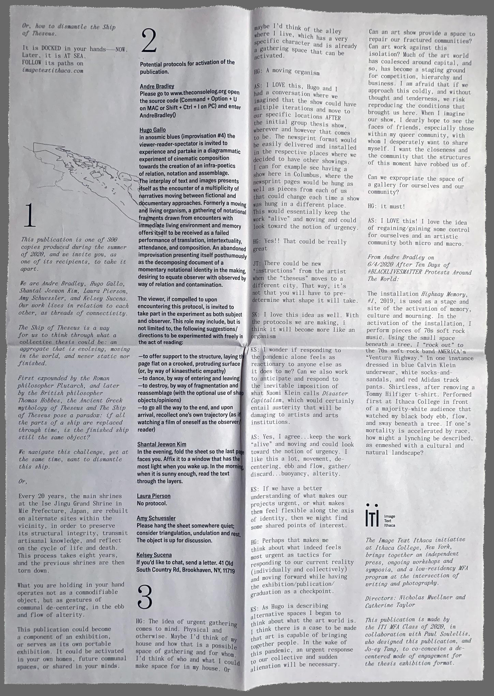
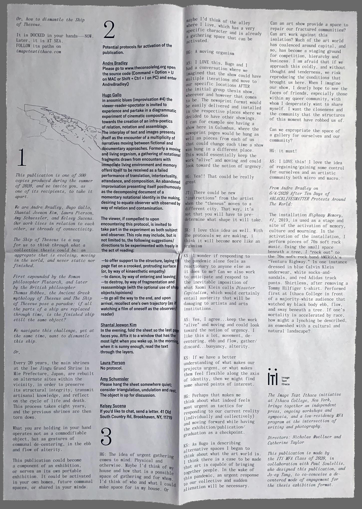

TAKE IT APART / TAKEN APART / TAKE A PART / TAKING APART / TAKE IN PART / TAKING PARTS / TAKEN PART / TAKE IT IN PARTS / TAKING PART / TAKE THE SHIP APART (2020)

TAKE IT APART is a publication by the Image Text Ithaca MFA Thesis Class of 2020, including Andre Bradley, Hugo Gallo, Shantal Jeewon Kim, Laura Pierson, Amy Schuessler, and Kelsey Sucena. Jo-ey Tang and I worked with the group to curate their individual thesis projects and translate them to a print-based, de-centered mode of exhibition. The newsprint edition of 300 was mailed to recipients with instructions to activate the publication as a DIY installation in physical space. Students conceived of potential protocols for their individual sheets, which slide out of the folded, unbound publication. The publication was distributed in November 2020, but will officially launch at Printed Matter’s Virtual Art Book Fair with an online performance and readings in February 2021.



TAKE IT APART Newsprint publication 13.8 in. x 21.6 in.
28 pages
Edition of 300
November 2020
 
